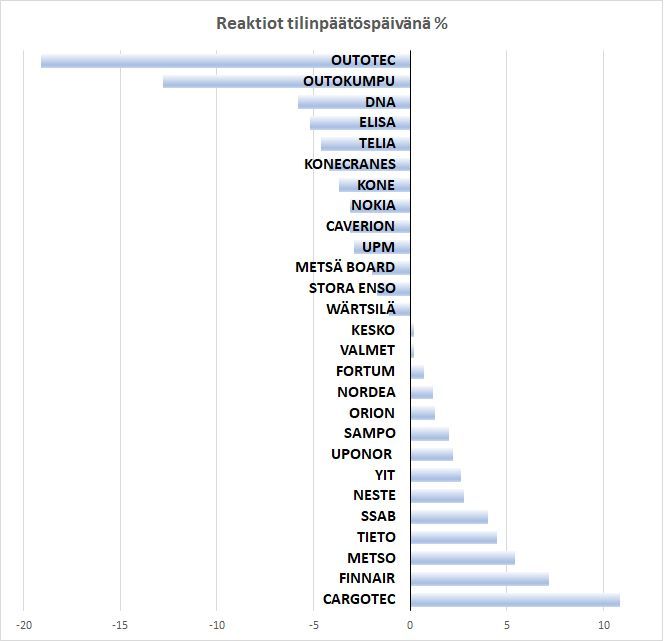
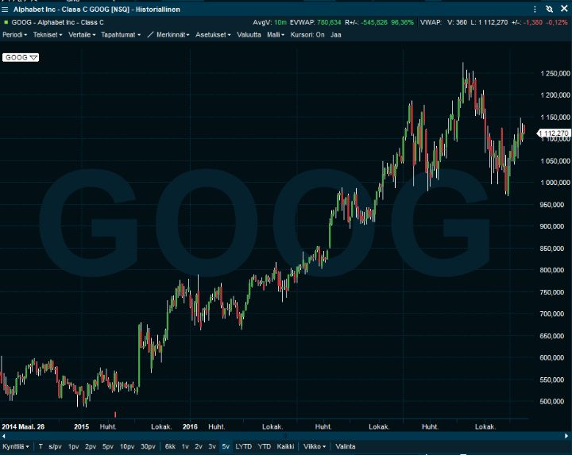
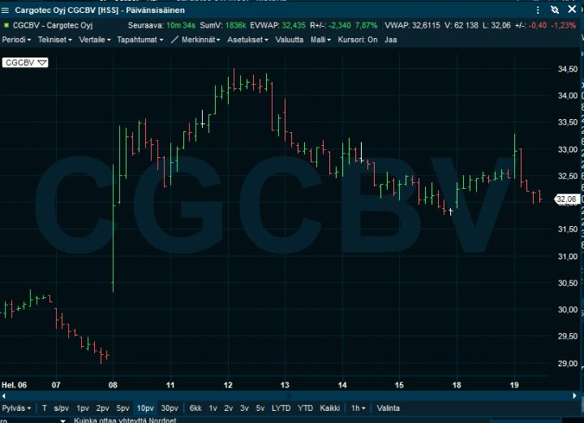
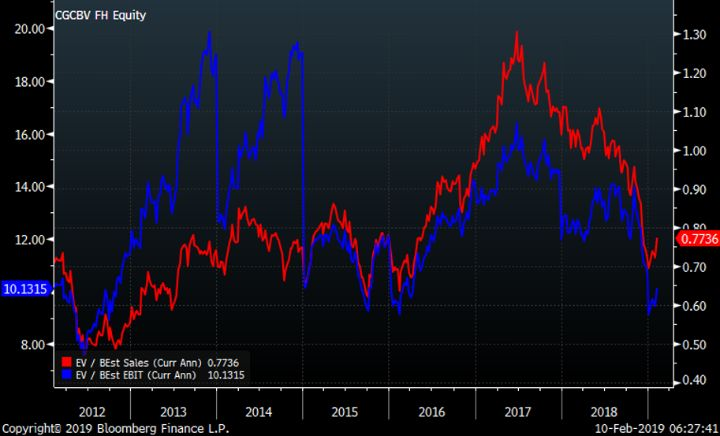
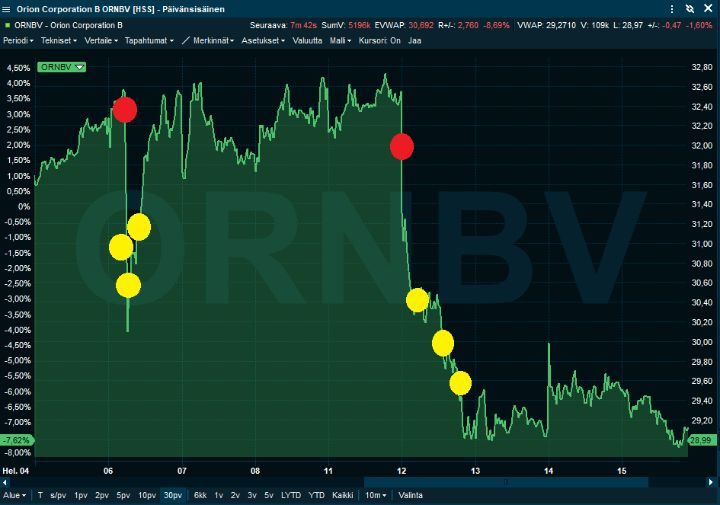

Osakepoimintoja tilinpäätöskaudelta
Vuoden 2018 tulokset alkavat olla selvillä suurempien yhtiöiden osalta. Mikä on yhteenveto? Ehkä se, että tulokset ja näkymät eivät olleet niin surkeita kuin vuodenvaihteen kurssilaskussa ehdittiin pelätä. Tilinpäätöskaudelle tultiinkin jo vauhdikkaan rallin saattelemana, joten odotukset ehtivät hieman nousta. Inderesin tilastojen mukaan pettymyksiä oli enemmän kuin positiivisia yllätyksiä. Se näkyy myös ensimmäisten päivien kurssireaktioissa. Keskimäärin suuret suomalaisosakkeet laskivat noin prosentin tilinpäätöspäivänä:

Toisaalta yhtiöitä on niin vähän, että kahden heikoimman, Outokumpu ja Outotec, poistaminen tilastosta kääntäisi keskimääräisen reaktion jo niukasti positiiviseksi.
Oma näkemykseni on kuitenkin, että kokonaisuudessaan tilinpäätökset olivat helpotus. Vaikka analyytikoiden odotuksista usein jäätiin, sijoittajien odotukset olivat jo vähän alemmat. Tätä tukee myös se, että moni osake toipui tulospäivää seuraavina päivinä. Esimerkiksi Stora Enso ja UPM-Kymmene nousivat vauhdikkaasti tuloksen jälkeisellä viikolla, vaikka ensireaktio oli negatiivinen.
Raportointikuukaudet ovat itsessään riittävän läkähdyttäviä kokemuksia, enkä yritäkään kertoa, mitä kaikkea olen tehnyt ja mihin olen huomioni kiinnittänyt. Ajattelin kuitenkin käydä kolme esimerkkiä tuloskaudelta:
1. Osake, jota omistamme, emmekä tehneet mitään: Alphabet (Google)
2. Osake, jota emme omistaneet, mutta nyt ostimme: Cargotec
3. Osake, jossa ei ollut positiota, mutta myimme lyhyeksi: Orion
En pyri tässä alkuunkaan tyhjentävään analyysiin, vaan perustelen simppelisti muutaman liikkeen, mitä teimme.
1. Alphabet (käytän edelleen nimeä Google)
Niin sanotuista FAANG yhtiöistä puhutaan usein tämän nousukauden ilmentymänä ja jopa kuplana. Jos katsotaan Googlen perinteisiä tunnuslukuja viime vuoden tiedoilla P/E 24 ja P/S 5,7, niin ei kait halvaksi sitä voi väittää.
Googlella on kuitenkin roppakaupalla lieventäviä asianhaaroja. Lainaa yhtiöllä ei juuri ole ja käteistä tililtä löytyy 109 miljardia dollaria. Käteisestä puhdistettu P/E onkin siis enää 20.
Googlen odotetaan kasvattavan tänä vuonna tulostaan 30 %, pääsemmekin kuluvan vuoden tuloksella jo P/E lukuun 16. En usko, että mitään ylituottoa pystyy markkinoilla tekemään pelkkiä hinnoittelukertoimia vertailemalla. Google on kuitenkin edullisempi kuin Kesko tai Wärtsilä. Se ei enää kuulosta kovin pahalta?
Sitten päästään hinnoittelukertoimia mielenkiintoisempaan aiheeseen, eli miten Google voisi tehdä vielä enemmän tulosta?
Hakupalvelu alkaa olemaan aika lihava possu. Sitä on vaikea enää lihottaa. Adsense ja Adwords ovat älyttömän vahvoja tekijöitä, mutta kasvu jo hidastumaan päin. Android-käyttöjärjestelmä on jo miljardeissa puhelimissa. Vaikkei Android edes tekisi hyvää tulosta (mitä se ymmärtääkseni tekee), se olisi valtavan arvokas omaisuuserä.
Youtubelle on pitkälti toista miljardia käyttäjää, mutta suosion rahaksi muuttamisessa on oltu varovaisia. Näkisin, että tässäkin on pitkä matka kuljettavana kannattavuuden parantamisessa. Pilvipalveluissa Google on Amazonin AWS:n ja Microsoftin Azuren jälkeen vasta kolmantena. Kasvuvauhti on kuitenkin hyvä ja skaala aivan riittävä. Googlen kartatkaan eivät vielä ole yhtiön mittakaavassa suuri kassavirtakone. Mutta sadoille miljoonille ihmisille ja lukemattomille sovellutuksille se on korvaamaton työkalu. Kun joku asia on korvaamaton, ennen pitkää se osataan myös rahastaa.
Sitten päästään Googlen rahaa polttaviin operaatioihin, joilla voisi olla jotain arvoa. Waymo on yleisen käsityksen mukaan pisimmällä itseajavissa autoissa. Se on hyvä paikka olla, ja olen nähnyt sillä asetettavan jo yli sadan miljardin dollarin hintalappua. DeepMind ja Google yleisesti on monien mielestä myös tekoälyssä aivan kärjessä. Dataa kertyy Androidin, mapsin, haun ja muiden tuotteiden kautta älyttömän paljon. Googlella on näiden lisäksi todella monta lupaavaa hanketta.
Käytin Googlen tuloksen analysoimiseen alle puoli tuntia. Halusin tietää, mistä pettymys ja tulosalitus johtui. Käytännössä koko heikkous ja vähän yli selittyi kovalla rahanmenolla etenkin ”muut vedot” osastossa. Eli niihin, jotka ovat toistaiseksi lähinnä kulueriä. Tappiota sieltä kertyi 1,3 miljardia yhdessä neljänneksessä. Ja se oli minusta mahtava juttu. Rahaa kuluu, koska halutaan olla tekoälyssä ja itseohjautuvissa autoissa ykkösinä. Samalla kuitenkin varmistetaan, että Google voi vielä tuplata liikevaihtonsa ja tuloksensa.
En väitä, että Google on mikään hiomaton timantti. Se on yksi maailman seuratuimmista osakkeista, eikä minulla ole mitään etua arvioida sen lähivuosien tulosta. Toisaalta se vähentää myös tarvetta analysoida yhtiötä jatkuvasti. Itselleni yhtiön tuotteet ovat hyvin arvokkaita, sen johto pitkänäköinen ja osake kohtuullisen hintainen. Suuri koko on kuitenkin ongelma, enkä usko sen pitkän ajan tuoton ylittävän kymmentä prosenttia.

2. Cargotec
Cargotec antoi joulukuussa tulosvaroituksen, joten odotuksia tulokseen oli laskettu. Yleensäkin suurimmat liikkeet tulosraportteihin tulevat, kun osake on lyöty, mutta tulos on silti kelvollinen — tai päinvastoin yhtiö hehkutettu, mutta tulos vaisu. Monesti kuitenkin hehkutetut yhtiöt lyhyellä aikavälillä jatkavat hyvää suorittamista ja lyödyt osakkeet jatkavat myös operatiivista kyntämistä.
Cargotecilta tuli hyvälaatuinen tulos ja hyvät tilaukset. Ongelmia oli etenkin Hiabin toimituksissa, minkä takia tulosvaroitus oli jouduttu antamaan. Komponentit ovat tiukassa, ja toisaalta asiakkaiden rekkojen toimituksessa ja laitteistojen asennuksissa on viiveitä.
+ Erittäin hyvä tilauskirja on yllätys, kun katsoo negatiivista sentimenttiä makrotaloudesta ja yhtiön laskenutta pörssikurssia.
+ Sijoittajaesityksessä Vehviläinen totesi hyvin korkean tarjouskirjan olevan myös hyvälaatuinen.
- Pullonkaulat Hiabissa jatkuvat yhä ensimmäisellä puoliskolla.
- Ohjeistus kuulostaa varovaiselta siihen nähden, että Cargotecilta odotetaan melko suulta tulosylitystä.
Oma näkemys yhtiön liikevoitosta nousi hieman vuodelle 2019 ja myös 2020, koska silloin odotan työvoima- ja komponenttipulan viimeistään olevan ratkaistu. Pieni talouden hiipuminen rakentamisen suhteen ei Cargoa tässä tilanteessa haittaisi pullonkaulojen takia.
Tilinpäätösaamuna pyrimme ostamaan osaketta reilusti, jos sitä alle 31,5 euron hintaan saisi. Osake avasikin 30,50. Osaketta sai ostettua suhteellisen reilusti hieman avaushintaa korkeammalla keskihinnalla. Tarkoitus oli myydä osa saman päivän aikana ja pitää loput pidempään. Suunnitelma piti, ja samana päivänä osakkeesta sai pari euroa voittoa.

Seuraavina päivinä, 34 euron lähentyessä yllättävän nopeasti, karsimme hieman osakkeista, jota piti ottaa pitemmäksikin aikaa. Yli kymmenen prosentin tuotto päivissä on sekin ihan hyvä. Edelleen salkussa on jonkin verran osakkeita, mutten ole ihan varma menevätkö ne varsinaisesti hyvin pitkään salkkuun.
Oma näkemykseni on, että maailmantalouden odotettu heikkous tarjoaa jo nyt kohtalaisen ostopaikan Cargotecissa. Satamien automatisointi, ohjelmistojen kehitys ja erinomainen johto ovat pitkällä aikavälillä positiivisia tekijöitä.
Syklisiin yhtiöihin sijoittaminen voi olla pelottava ajatus pitkälle edenneessä taloussyklissä. Tuloskertoimiltaan (EV/EBIT sininen käyrä, vasen asteikko) Cargotec on viimeisen seitsemän vuoden alalaidassa ja liikevaihtoonkin verratessa kertoimet ovat tulleet huomattavasti alas (EV/SALES punainen käyrä, oikea asteikko).

Mielestäni tässä vaiheessa sykliä ei siis ole aika kerryttää suuria positioita talouden vaihtelulle alttiita firmoja, muttei tarvitse sentään kokonaan poistua. Cargotec oli kuitenkin hyvä esimerkki siitä, että kun osake on tullut melkein 40 % vuodessa alas, riittää vähän pienempikin positiivinen yllätys reiluun kurssiralliin.
Orion
Uskon, että Orionin osakkeen olisi ollut syytä laskea tulosjulkistuspäivänä. Viimeisen neljänneksen tulos oli kyllä ihan hyvä, mutta vuoden 2019 ohjeistettu liiketulos kielii liiketoiminnan heikkenevästä tuloskunnosta.
Sinänsähän tulosohjeistus ei ollut niin pahan näköinen, vain jonkin verran alle konsensusodotusten. Ongelma kuitenkin oli, ettei valtaosaan konsensusennusteista oltu lyöty 45 miljoonan euron etappimaksua, koska sen ajankohta ei ollut varma. Tästä syystä uskon, että kuluvan vuoden perusliiketoiminnan odotuksia jouduttiin leikkaamaan kymmenen prosenttia, joten kurssin toipuminen oli yllätys.
Orionissa kävi sinänsä hämmästyttävä tuuri, että vaikka osaketta myi hyvin paljon tilinpäätösilmoitukseen, 90 % osakkeista tuli ostettua puolitoista euroa eli 5% halvemmalla. Alla kuvaajan ensimmäinen punainen pallo kuvaa myyntiä tilinpäätöstiedotteeseen keskellä päivää, ja keltaiset pallot osakkeen takaisinostoja:

Puolet yhtiötä seuraavista (4) analyytikoista laskivat yhtiön suositusta seuraavan kahden päivän aikana. Sekään ei juuri laskenut osakekurssia. Vahvuuden syynä oli luultavasti, että yhtiöltä oli seuraavalla viikolla tulossa yhtiön ylivoimaisesti tärkeimmän kehityskohteen darolutamidin tarkemmat tutkimustulokset, joista odotukset olivat korkealla.
Olimme Orionia edelleen shorttina. Orion twiittasi 11.2. illalla kello 22:37 linkin tarkempiin tutkimustuloksiin. Reilua olisi toki ollut laittaa pörssitiedotekin tuloksista. Tutkimustulokset eivät olleet katastrofi, mutta eivät ne sijoittajiin vaikutusta tulisi tekemään, etenkin kuin tulosten positiivisuudesta oli jo saatu viime vuonna ennakkotiedot.
12.2 aamulla pörssin auetessa, osaketta sai myydä vielä aika hyvään hintaan ja reilusti ensimmäisen minuutin ajan (kuvaajan toinen punainen pallo), mutta sitten osakkeelle tuli noutaja. Ulkomaiset sijoittajat laittoivat myyntimyllyt päälle ja osake laski lopulta täydet kymmenen prosenttia. Usein hieman vaikeasti tulkittavissa oleva tieto on arvokkainta, koska suurin osa sijoittajista ei suoralta kädeltä ymmärrä sitä.
Olisin odottanut Orionin laskevan kokonaisuutena tilinpäätöksen ja darolutamidi-pettymykseen vähän enemmänkin. Orionin omistajat ovat kuitenkin pääasiassa hyvin pitkäaikaisia sijoittajia. He eivät myy yksittäisen huonon vuosineljänneksen tai edes vuoden takia. Lisäksi yhtiön keväinen osinko herättää aina hieman ostokiimaa yksityissijoittajissa, joten ostanen osakkeet takaisin lähiaikoina.
Kokonaisuutena tilinpäätöskausi sujui varsin hyvin. Virheiltä vältyttiin, muttei toisaalta poikkeuksellisen hyviä ideoitakaan syntynyt. Seuraavana tuloskautena melkein kaikki isojen firmojen katsaukset on lyöty pääsiäisen jälkeiselle viikolla. Siinä sitten yrittää analysoida vaikkapa 40 osavuosikatsausta päivässä Pohjoismaissa!
Disclaimer: Kolumnit sisältävät mielipiteitä ja tietoa omista sijoituksista, jotka voivat vaihdella päivästä toiseen. Niitä ei tule ottaa sijoitussuosituksina. Kuten teksteissämme painotamme, päätökset kannattaa aina tehdä itse. Lukija vastaa itse voitoista ja tappioista.